Northwestern University · RDS Course Final Demonstration
Characterization test results for the Speedster finger
Seven characterization tests of the 3-DOF tendon-driven finger. Each result is processed from raw test data; figures and headline metrics are shown below.
Equivalent mechanical impedance of the fingertip, measured across three finger configurations. The extended pose is the most compliant and lightly damped; the retracted pose is the stiffest; the middle pose is the most damped.
| Configuration | Mass (g) | Damping (N·s/m) | Stiffness (N/m) | Mean coh. |
|---|---|---|---|---|
| 1 : Extended | 49.3 | 1.49 | 1424 | 0.95 |
| 2 : Retracted | 39.7 | 7.39 | 2234 | 0.88 |
| 3 : Mid | 89.1 | 16.23 | 2070 | 0.65 |
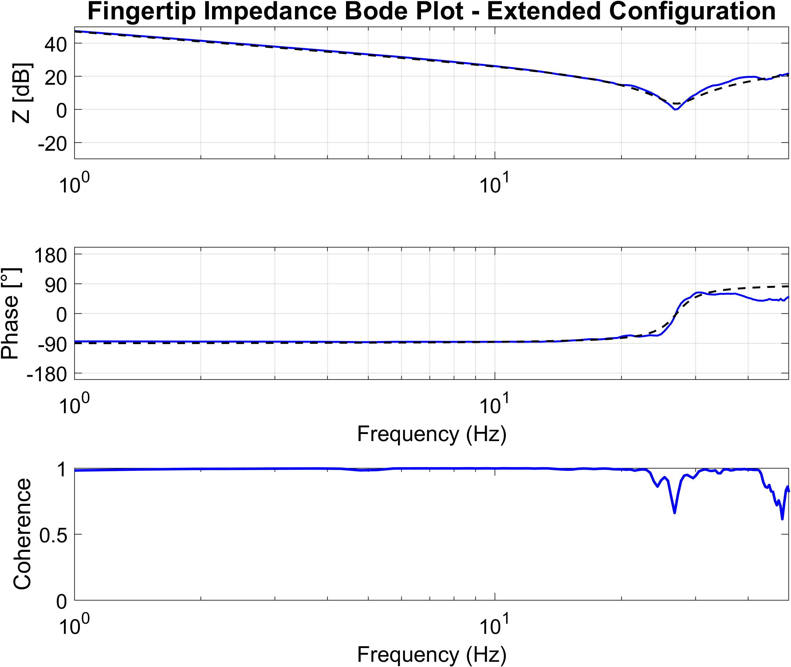
Config 1 | Extended.
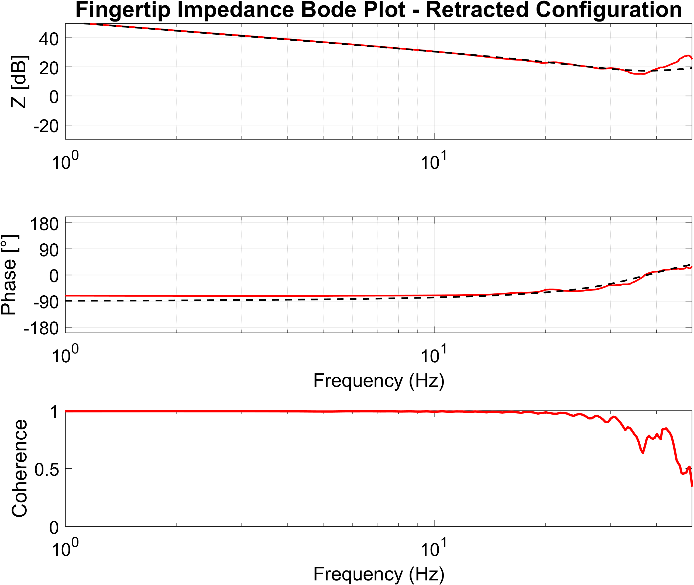
Config 2 | Retracted.
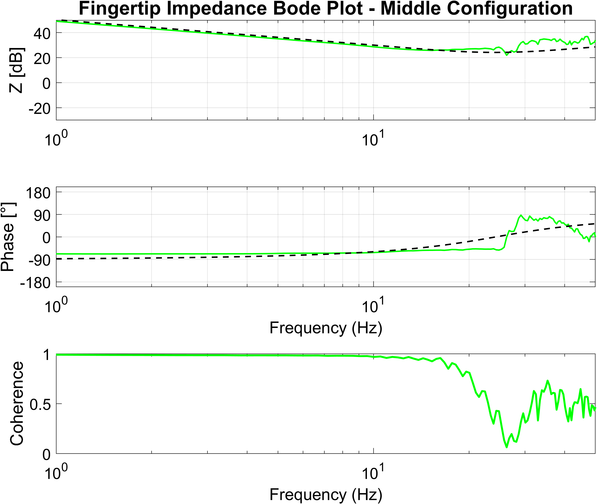
Config 3 | Middle
Video of the Lissajous trajectory we attempted to track.
| Trial | Mean Error(mm) | RMS Error(mm) | Max Error(mm) |
|---|---|---|---|
| 1 | 5.919 | 6.789 | 11.829 |
| 2 | 6.164 | 6.982 | 12.045 |
| 3 | 7.463 | 8.076 | 12.573 |
| 4 | 6.817 | 7.491 | 12.323 |
The fingertip traces a 1:2 Lissajous figure in the flexion plane while a marker is tracked by camera. From the figure it can be seen that the finger tip does not fully track the desired trajectory, with an average max error of 12.573mm, however, the result is very repeatable.
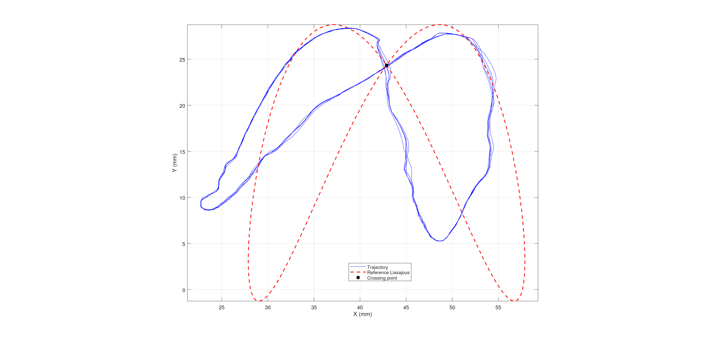
The finger reached its -3dB bandwidth at a frequency of 3.15Hz, meaning that it was able to achieve a linear response up this frequency. The system begins to experience attenuation after this point, with a significant magniutde drop off at around 7Hz. There also looks to be a resonant peak around 8Hz, however, it is difficult to make a conclusive claim about this, as the coherence drops below 0.6 at frequencies greater than 6Hz. Low coherence is also present in the low frequency range, indicating that the chirp signal was not long enough to get a meaningful reading. The last indicator of our systems performance is the phase delay, which can be seen to be near zero between 1 and 5 Hz, indicating that minimal phase lag was present at these frequencies. The lack of coherence at higher frequencies makes the phase response unreliable from this reading.
Video of the position chirp test we ran to obtain the data for this test.
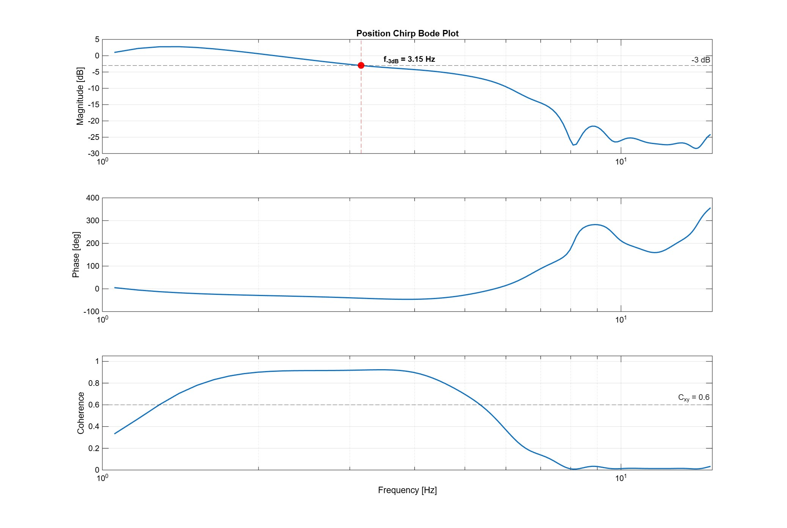
Bode plot of position chirp from 0.1 to 30 Hz.
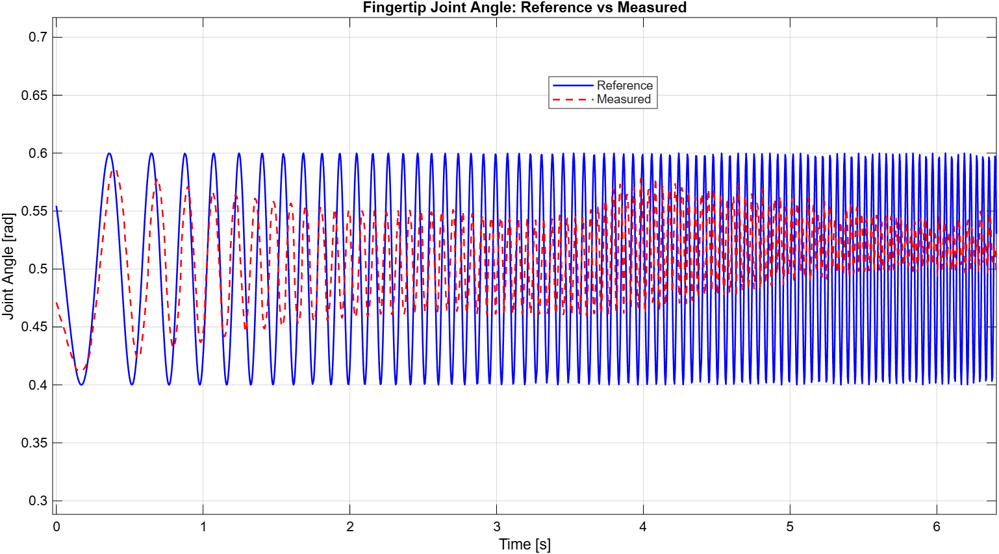
Time series of the position chirp from 0.1 to 30 Hz.
The -3dB bandwidth for the velocity control is 2.5Hz which is slightly lower than the 3.15Hz result for the postion controller. There seems to be some attenuation present in the system, however, the range between 3 to 10 Hz seems to be somewhat consistent. The phase delay seems to be very large, and in general behaves very inconsistently. This is further supported by the fact that the coherence throughout the analysis is below 0.8, only showing a good coherence between 7 and 8 Hz. The most likely reason for this is noise accumulation in the derivation of the velocity values, as we first obtain the position values of the fingertip from a video stream, which we then use to differentiate with Savitsky Golay. This process causes any noise to stack which is felt strongly when converting to the frequency domain.
Video of the velocity chirp test we ran to obtain the data for this test.
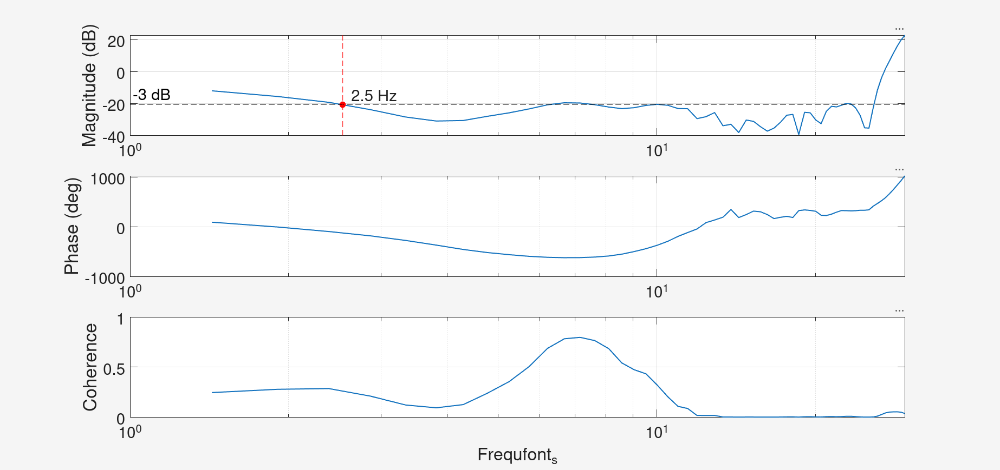
Bode plot of velocity chirp from 0.1 to 30 Hz.
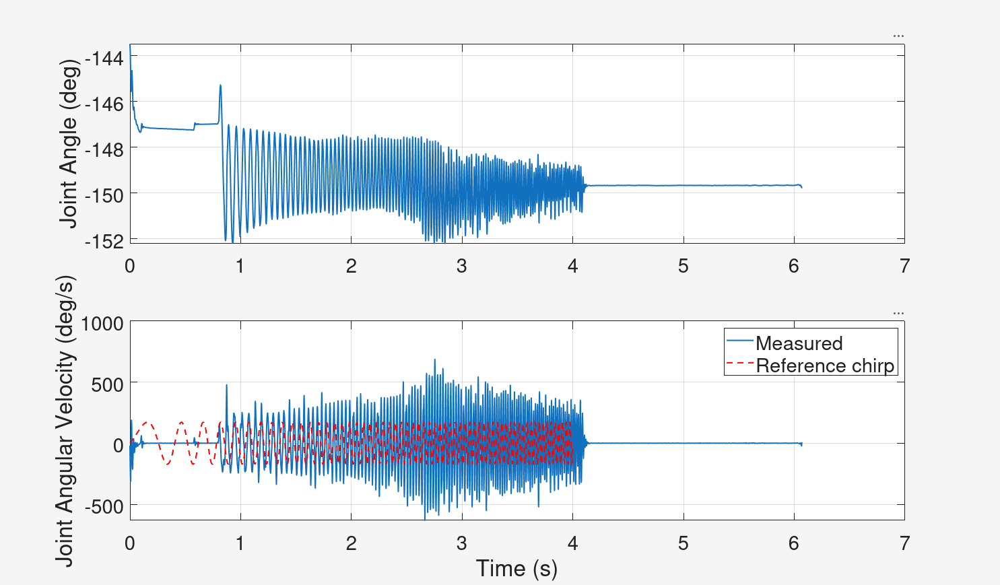
Time series of the velocity chirp from 0.1 to 30 Hz.
Time to complete one full extension–flexion cycle through the entire range of motion, driven by a 3.5 Hz square wave. The finger tracks essentially perfectly: mean cycle time 0.290 s (3.45 Hz, within 1.5% of command) over 10 cycles, with the full ~89° MCP range reached every cycle.
| Average cycle time (10 cycles) | 0.290 s (σ 0.19 ms) |
| MCP range of motion | 88.8° (0.4° → 89.2°) |
| Peak acceleration | +30,935 °/s² (+540 rad/s²) |
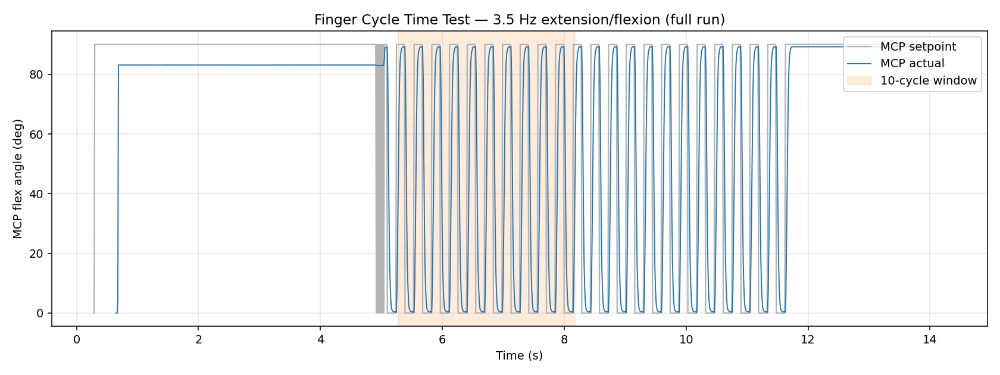
Full run — actual vs commanded MCP angle, 10-cycle analysis window shaded.
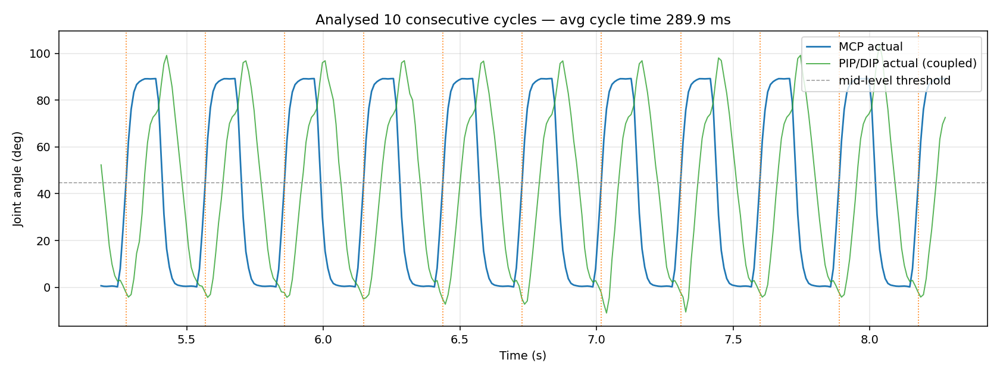
The 10 analysed cycles with detected boundaries.
Step response tracking a 1 Hz square-wave position reference against a spring environment. The controller settles all 27 steps within the 0.5s half-period, with fast rise and essentially no overshoot.
Video of the finger following a step position referenced again a spring.
| Metric | Rising | Falling | All |
|---|---|---|---|
| Settling time (2%) | 94.3 ms | 90.0 ms | 92.2 ms |
| Rise/fall (10–90%) | 45.2 ms | 41.2 ms | 43.3 ms |
| Overshoot | 0.13% | 0.09% | 0.11% |
| Steady-state error | 0.29° | 0.07° | 0.19° |
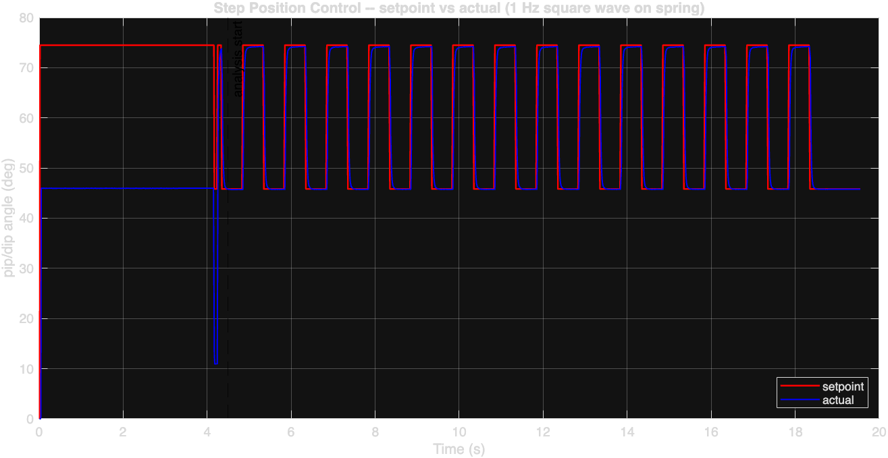
Square-wave command and measured pip/dip response.
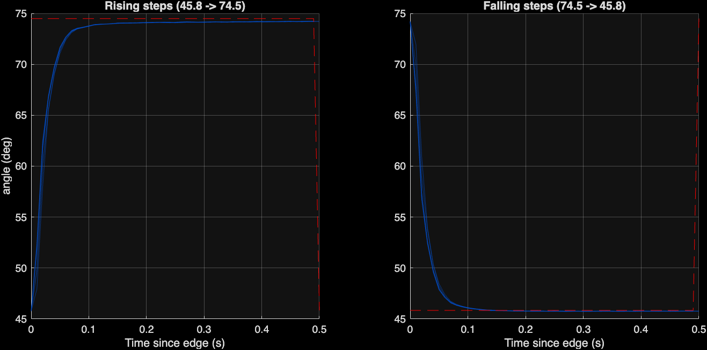
All steps time-aligned and overlaid.
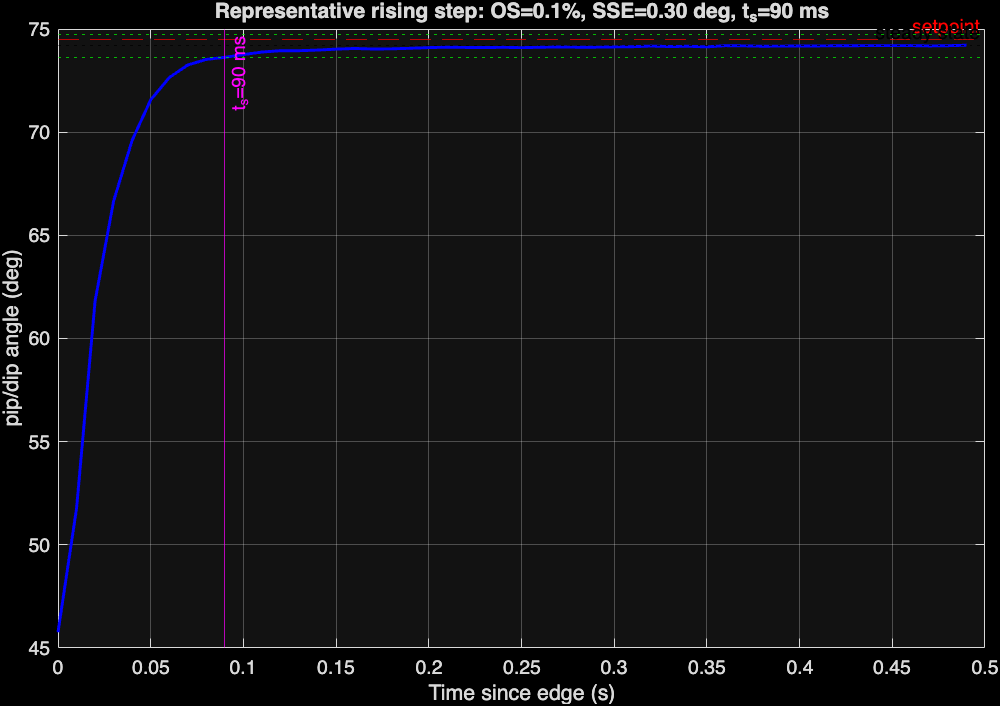
Representative step annotated with metrics.
Force step response tracking a square-wave force reference (alternating every ~1 s) at several force ranges, measured with a stationary load cell. Tests ran from force intervals starting at a low range of 1 N and stepping to 3 N, 10 N, 15 N, and 20 N. The high force range response is very fast and settles in ~0.2–0.3 s, whereas the low force range is fast but never fully settles.
| Level | Achieved lo/hi (N) | Step (N) | Settle (ms) | Rise/fall (ms) | Overshoot (%) |
|---|---|---|---|---|---|
| 3 N | 4.5 / 5.1 | 0.6 | 842 ± 109 | 14 ± 16 | 11.9 ± 2.7 |
| 10 N | 5.2 / 13.2 | 8.0 | 210 ± 266 | 36 ± 9 | 2.8 ± 0.7 |
| 15 N | 3.1 / 16.6 | 13.6 | 374 ± 357 | 75 ± 108 | 3.3 ± 3.3 |
| 20 N | 4.5 / 25.4 | 20.9 | 288 ± 352 | 66 ± 27 | 2.0 ± 2.2 |
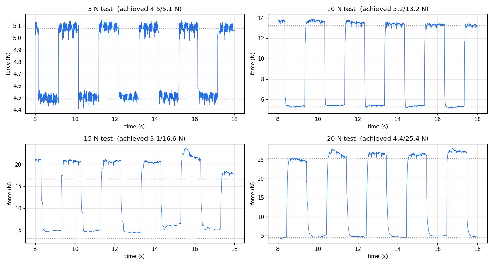
Measured load-cell force at each force level.
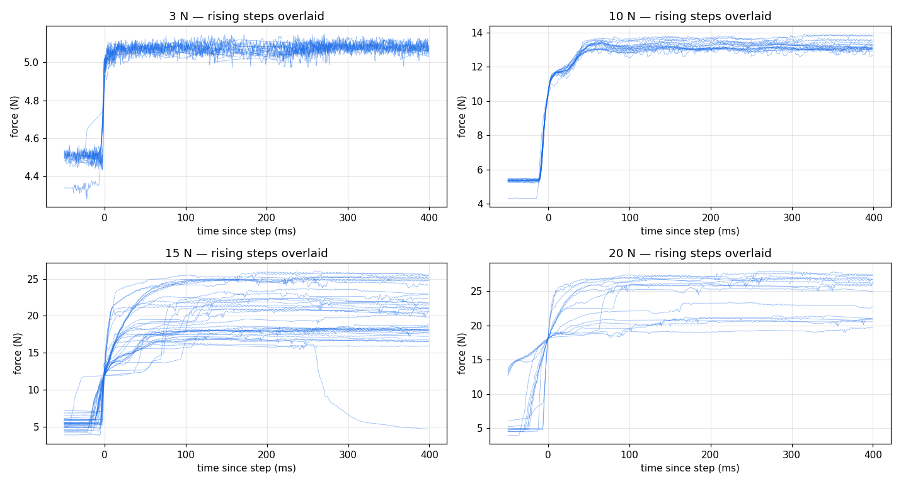
Rising steps time-aligned and overlaid.